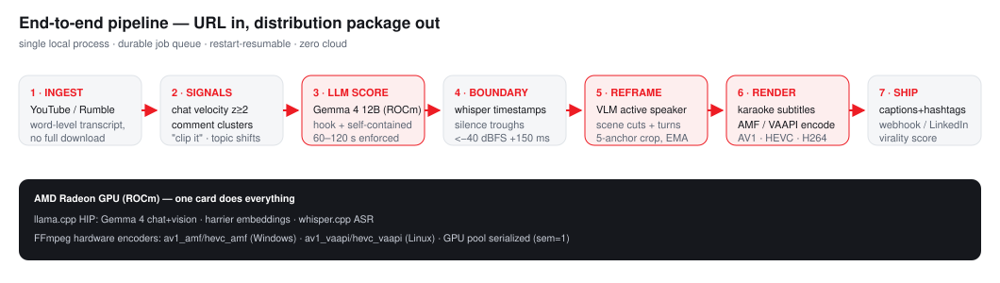
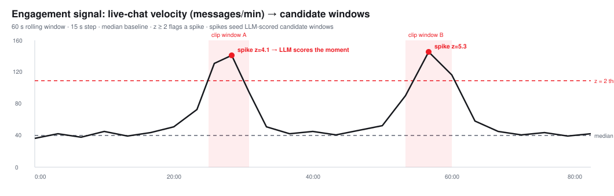
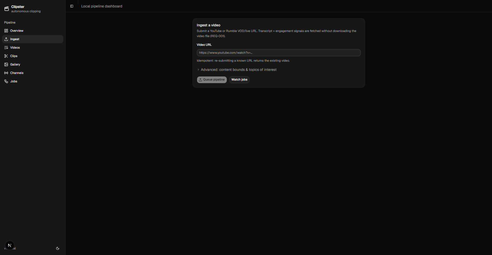
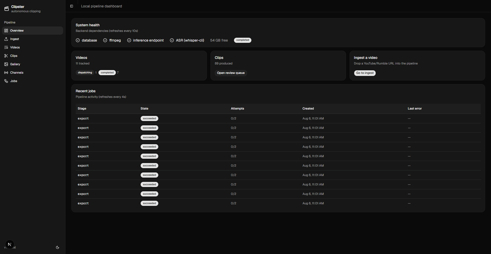
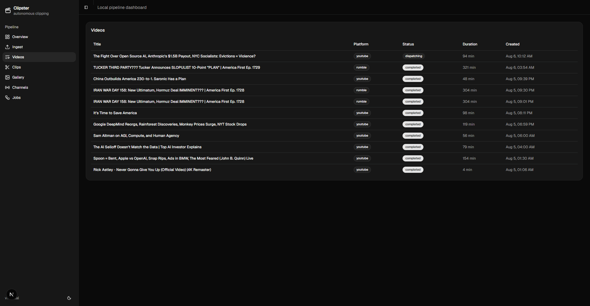
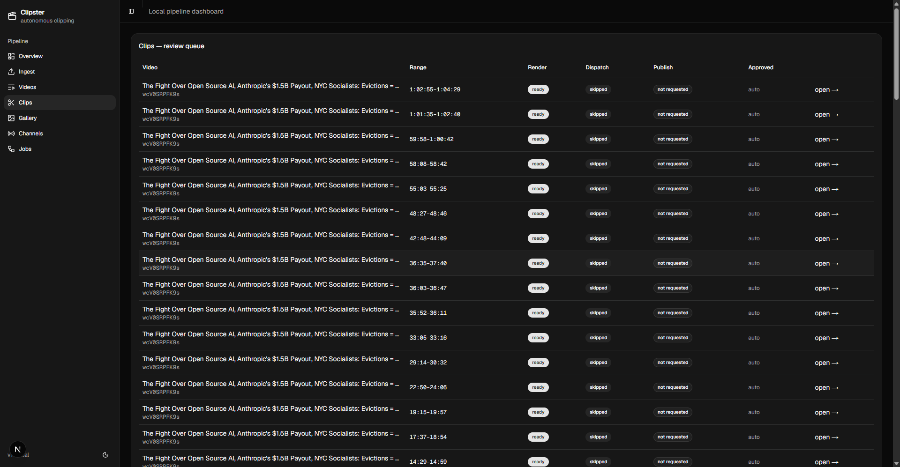
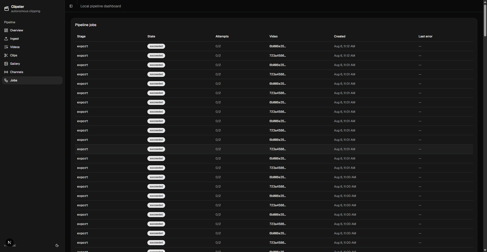
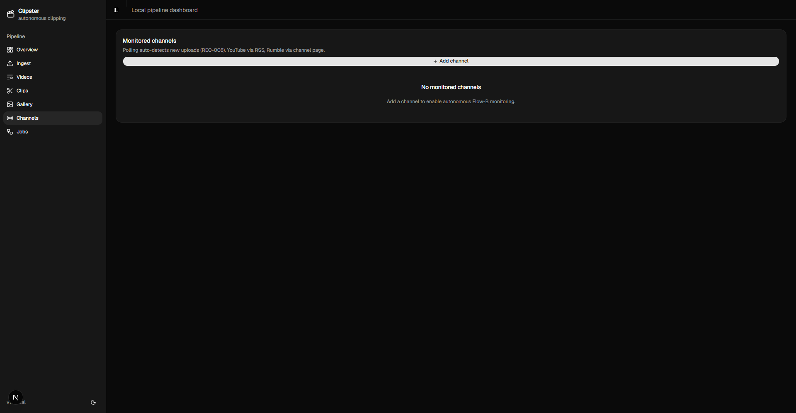

Clipster // Autonomous Local Video Clipper
1 · Project background
Podcasts and long-form shows publish multi-hour episodes daily. Buried in each are three or four viral-ready nuggets — but extracting them is brutal manual work: scrubbing timelines with headphones, listening for clean pause points so words aren't sliced, cropping 16:9 to 9:16, burning subtitles, writing platform captions. By the time a human editor ships a clip, the internet's attention has moved on.
Clipster replaces that entire desk job with an autonomous local pipeline: it continuously watches target feeds, detects audience-validated moments, scores them with a local LLM, cuts at true silence troughs, reframes vertically with VLM-driven active-speaker tracking, renders word-synced karaoke subtitles on AMD hardware encoders, and dispatches a complete distribution package (video + captions + hashtags + virality score) via webhook or LinkedIn — with zero cloud cost and zero data leaving the machine.
2 · Target users & application scenarios
- Content editors & media desks running high-volume show channels (All-In Podcast, Dwarkesh Patel, TBPN-style formats): continuous feed watching, instant clip packaging for TikTok/Shorts/Reels/LinkedIn.
- Creator-owned operations who want a 24/7 producer without SaaS subscriptions or per-minute cloud fees.
- Privacy-sensitive publishers: everything — transcripts, scoring, vision analysis, rendering — stays on local hardware.
Scenarios demonstrated: YouTube + Rumble VOD and live-replay ingestion, live-chat velocity spike detection, comment timestamp clustering, verbal "clip it" trigger windows, multi-panel podcast reframing, and screen-share/slide layouts.
3 · System architecture
Single local process: FastAPI API + feed monitor + durable job queue (SQLite/PostgreSQL) + orchestrator state machine, with a serialized GPU worker pool (semaphore = 1) and a CPU render pool. Jobs survive restarts and resume from persisted state.


4 · Model & algorithm introduction
Clipster never trains or manages weights — it consumes local OpenAI-compatible services (llama.cpp / whisper.cpp), so any ROCm-capable model stack can be swapped in via environment variables:
| Role | Model | Serving | Algorithm |
|---|---|---|---|
| Scoring / captions / boundary refinement | Gemma 4 12B-it (UD-Q4_K_XL, MTP draft) | llama-server, ROCm/HIP | virality rubric over timestamped transcript; constrained 60–120s windows |
| Vision (smart 9:16 crop) | Gemma 4 mmproj (BF16) | same llama-server | two-stage keyframe sampling (FFmpeg scene cuts + whisper speaker turns) → 5-anchor active-speaker grid, EMA-smoothed tracking |
| Embeddings | harrier-oss-v1-0.6B | llama-server --embeddings | chunk embeddings; TextTiling-style cosine valleys seed topic-shift candidates |
| ASR | whisper large-v3-turbo | whisper-server / whisper-cli, HIP | word-level timestamps, speaker turns; silence-trough boundary snapping (< −40 dBFS, 150 ms pad) |
Engagement algorithms: live-chat velocity (60s window / 15s step, median baseline, z ≥ 2 spikes), comment timestamp clustering (±5s, cluster ≥ 3), and verbal trigger lookback windows.
5 · Adaptation for AMD Radeon GPU / ROCm
- Hardware video encoding: Windows builds auto-probe AMD AMF encoders (
av1_amf → hevc_amf → h264_amf); Linux builds auto-probe VAAPI (av1_vaapi → hevc_vaapi → h264_vaapi) withhwuploadfilter-graph wiring — libx264 only as last resort. Quality maps to AMF presets / VAAPI CQP. - All inference on ROCm: chat, vision, embeddings and ASR run on the Radeon GPU through HIP-compiled llama.cpp (
-DGGML_HIP=1 -DAMDGPU_TARGETS=gfx1100) and whisper.cpp — validated on a Radeon RX 7900 XTX (RDNA3, 48 GB demo instance). - Single-GPU design: GPU pool serialized (semaphore = 1) so decode/encode/inference share one card without OOM; CPU pool handles I/O-bound stages.
- Zero cloud: no model weights are downloaded or managed by Clipster; the deployer's ROCm servers are consumed as OpenAI-compatible endpoints — the entire product runs air-gapped.
6 · Product screenshots (demo run: 11 videos → 89 clips)





